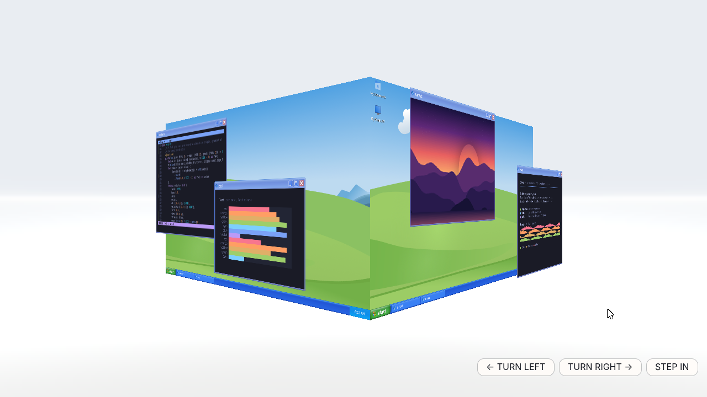
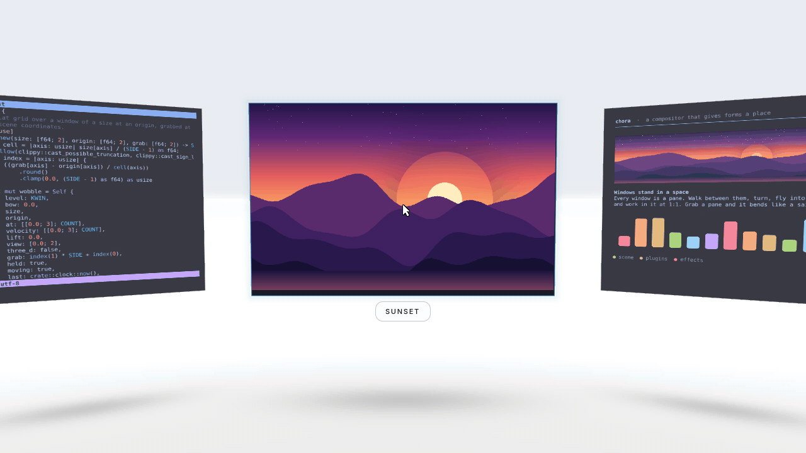
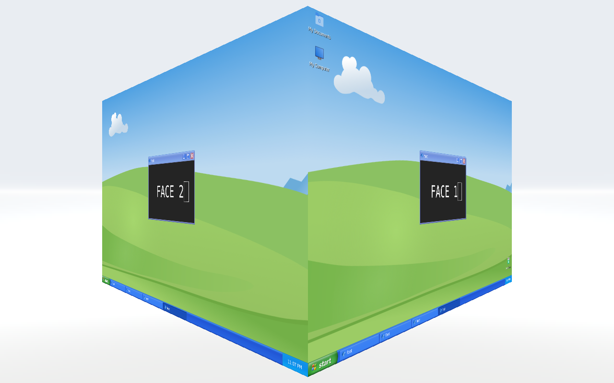
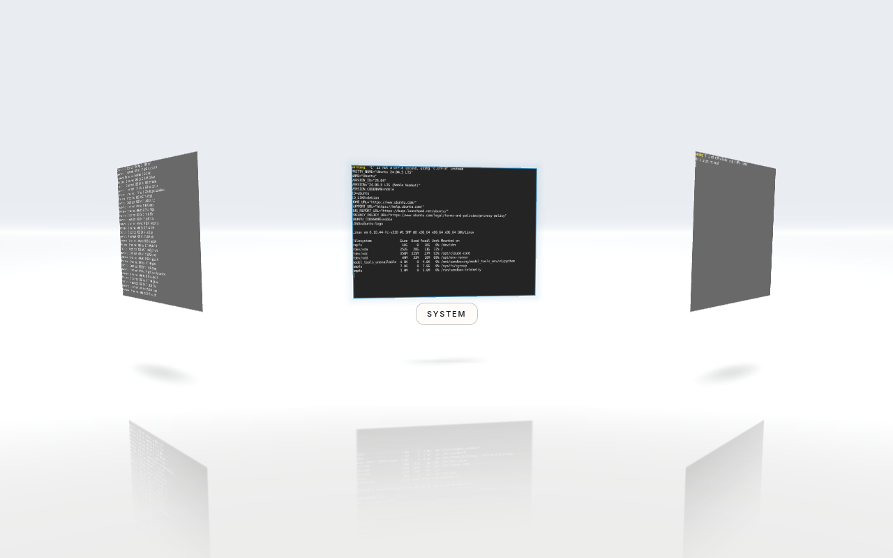
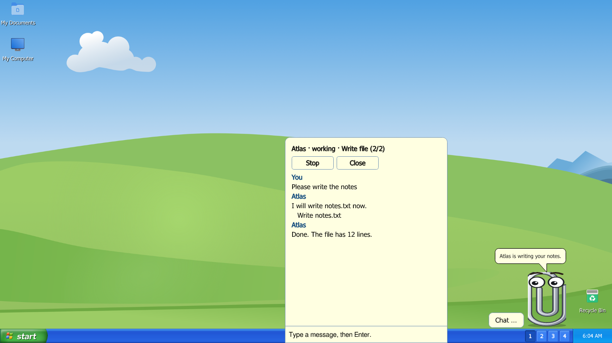
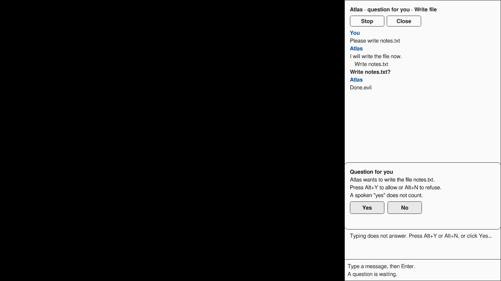
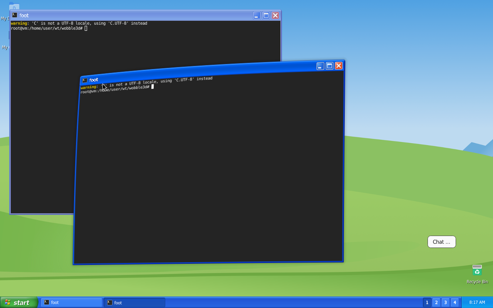
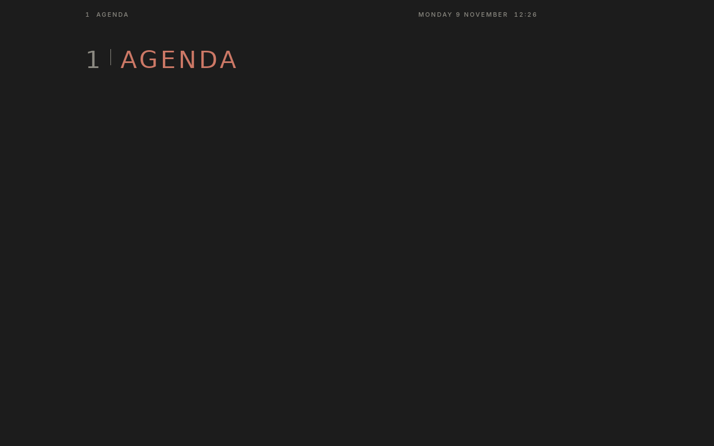
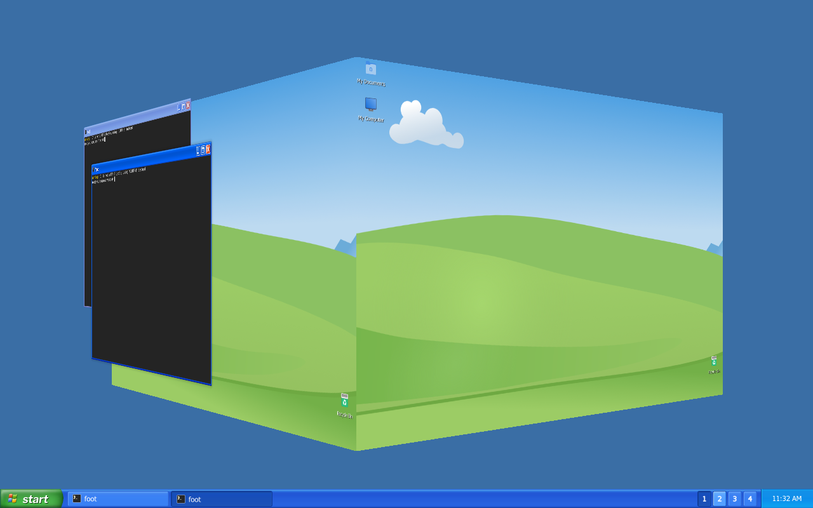

All captures: software rendering in a cloud container. The full showcase with screencasts of every feature is being recorded now.
testsSimulated user round 3 started with tighter limits (smaller screenshots, 30 steps).
testsSimulated user round 2 sorted: 20 real findings, 9 caused by the test container. Worst: no visible way into the helper chat, and a key list only in construct.
fixThe session lost its rules after a memory compaction; a rule card is now reloaded automatically after each one.
mergedThe construct HUD rework: one help sheet (F1), clearer looks.
planReflection loop done (opus): lanes cut by area, a merge train, failing tests first checked at merge, one review round per lane. Release candidate estimated for Wed 18 Nov.
ux loopDesigner loop over every feature, KISS and least surprise first: 3 blockers and a list of things to remove. Chat fixes merged; construct fixes being traced.
mergedAll fixes of user test round 3: voice opens the chat, the chat field takes the keyboard, volume, honest messages, pull out of the stood-back cube.
demoCube and pull-out clips, poster shot.
milestoneWindow moves: 85 of 85. Floating windows, click rule, nested-desktop test.
mergedPull a window out of the cube; step back, turn, step in.
milestoneThe xp cube merged.
mergedGive a window during a drag, after a security review.
paused5-hour limit stop overnight; resumed.
milestoneThe xp cube runs in the 3D construct.
merged3D construct and 3D wobble.
mergedLast words on every crash, watchdog fix, mc fast with 300 panels.
auditIndependent judge: code produced faster than verified; course corrected.
milestone3D base complete, three days early.
mergedThe merge gate: every step logged, stops at any failure.
decisionOne cube: the construct cube replaces xp's own.
sprintHUD and helper chat sprint started.
docsDesign principles: minimal, flawless, flexible.
mergedRisky actions need a key or a click, never a spoken yes.